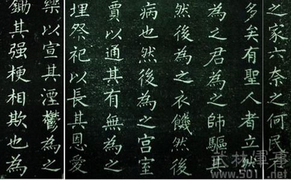
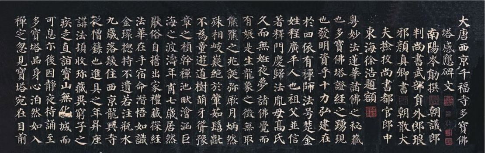

泼墨造物，笔下生花
泼墨造物，笔下生花
1、笔法概述
-
笔法有广义和狭义之分，广义的笔法包括执笔方法和用笔方法，狭义的笔法仅指用笔的方法。此指狭义。笔法包含笔的运行轨迹、运行速度、笔毫与表现载体的接触部位、笔锋所处的位置、笔的竖立程度和笔的转动状态等。

书法入门教程：如何学习书法？书法技巧及规律
2、笔的运行轨迹
- 笔的运行轨迹，指毛笔在书法表现载体（纸、绢、竹、木等）上运动、行进的路线和因此而留下的痕迹
。笔的运行轨迹因书体而异，因风格而异。
正书（含篆、隶、楷）讲究逆锋起笔、回锋收笔。所谓“逆入平出”、“无垂不缩，无往不收”就是对
笔的运行轨迹的基本要求。在起笔和收笔的过程中，笔锋往往两次经过同一个点。行笔过程中，笔画圆
转处，笔按弧线行进；笔画平直处，笔按直线运动。
行、草书由于运笔较快，笔意连贯，正书中逆起回收的要求被淡化。一笔之中，笔锋很少两次经过同一
点（交叉除外）。同时，行、草书变化丰富，直线条相对较少，笔多按曲线运动，连绵前行。
从书法的风格来说，方峻、内扌厌 的、其转折处（指横折）先提笔上靠，再按笔向内而下，笔意内敛，
笔画稍有重合。而圆润外拓者，转折处则直接向右下按笔，圆转下行，笔意向外拓展。二、笔的运行速度
3、笔与表现载体的接触部位
- 我们可以将笔毫先分为三个部分，接近笔管的三分之一称为笔根，接近笔尖的三分之一称为笔锋，中间
的三分之一称为笔腹。笔根以下的部分（即笔腹、笔锋）又可分为三个部分。如此，则笔毫自下而上可
大致分为四个部分：笔尖至九分之二处为一分笔，九分之二至九分之四处为二分笔，九分之四至九分之
六处为三分笔，九分之六以上的部分为笔根。
一般而言，用一分笔，线条轻盈、灵动；用二分笔，线条劲健、润泽；用三分笔，线条浑厚、沉稳；用
笔根，线条苍迈、野逸。在实际书写过程中，笔毫与表现载体的接触往往在多个部位之间相互转换，以
丰富线条的外在形式和内在质量。这种转换是通过提按来实现的。提笔浅行，则笔画轻细；按笔深进，
则线条粗重。四、笔锋在笔画中所处的位置
根据笔锋在笔画中所处位置的不同，用笔方法有中锋、侧锋、偏锋之分。中锋，亦称正锋，指运笔作书
时笔锋处于点画中间。为使点画圆润，历来书家多主张“笔笔中锋”。因笔锋在点画中间运行时，墨汁
顺笔尖流注而下，均匀渗开，达于四面，点画也就无上重下轻、上轻下重、左重右轻、左轻右重等缺点
。故“中锋”乃书法之根本笔法。“锥画沙”、“印印泥”即中锋之喻。清王澍《论书剩语》云：“中
锋者，谓运锋在笔画之中，平侧偃仰，惟意所使，用其既定也端若引绳。如此则笔锋不倚上下，不偏左
右，乃能八面出锋，笔至八面出锋，斯施无不当矣。”
偏锋，即运笔时将笔之锋尖偏在点画之一面。写出的点画往往有轻重不匀，一边光一边毛等弊病。一般
书家以偏锋为败笔。
侧锋，指运笔时笔锋所处的位置在中锋与偏锋之间的一种用笔方法。侧锋用笔是中锋用笔的必要补充。
在以中锋为主的前提下，适当运用侧锋，可使点画痛快淋漓，跌宕多姿，富有变化。正如古人所说的“
正以取劲，侧以取妍。”“正以主骨，侧以取态。”我们在王羲之、苏轼、米芾等书法大家的作品中常
可见到侧锋笔法的运用。

4、笔的竖立程度
- 根据笔与书法表现载体的平面是否垂直和笔的倾斜方向与运行轨迹的关系，笔的竖立程度可分为垂直（
基本垂直）、与运行轨迹基本一致的倾斜和与运行轨迹不一致的倾斜三种情形。
垂直，指笔与表现载体的平面呈基本垂直状态。这是中锋用笔时笔的基本状态。明赵宦光《寒山帚谈·
用材》云：“正锋全在握管，握管直则求其锋侧不可得也。握管袤则求其锋正不可得也。”
与运行轨迹基本一致的倾斜，指笔的倾斜方向与笔欲往或既过的方向基本一致。有笔毫在后、笔杆在前
（可称为“拖”）及笔毫在前、笔管在后（可称为“推”）两种情况。当代书家雷志雄作篆书多用“拖
”法，而何应辉作书则常用“推”法。
与运行轨迹不一致的倾斜，指笔管偏出点画之一侧的倾斜，通常的情况是笔尖在点画一侧，而笔管则倒
向另一侧。侧锋用笔多用此法。若笔管过于倾斜，笔腹着纸横行，则为偏锋。偏锋不可用，用则扁薄
5、笔的转动状态
- 根据笔在运行过程中是否转动，用笔方法分转笔和不转笔两种。转笔，指运笔时执笔之手指与笔管的接
触部位不断发生变化，捻动笔管，令笔管转动的用笔方法。不转笔，其意相反。
转笔是笔法的重点，也是书法之“法”的重要方面，中锋行笔的基本条件。因为只有转笔才能“令笔锋
常在画中行”。“担夫与公主争道”、“鹅划水”就是古人对转笔的生动比喻。“道”、“鹅”即笔杆
，“担夫与公主”、“鹅掌”即笔杆两侧之手指，“争”、“划”即是两侧手指的来回捻转。
转笔的方向应视笔的运行轨迹而定。如相向之两竖，行笔时左竖左转，右竖右转。而相背之两竖，其转
笔之方向则相反，左竖右转，右竖左转。横画则视其俯仰，折画则视其外拓内扌厌来确定笔转动的方向
。反过来说，则不同的转笔方向决定笔画的运行轨迹和书法风格。关于转笔，当代著名女书法家孙晓云
在其著作《书法有法》中作了较为详尽的论述，有兴趣的朋友不妨一读。
“执笔”松紧谈 关于执笔的松紧，有很多的讨论，有说东、有说西，对于初学者来说，好像站在十字路
口，不知道往哪个方向。就这个问题，我们常见的有以下三种论述：
（1）、执笔以紧为好。
执笔”松紧自古早有定论，就是一直沿用唐代著名的书法理论家张怀瓘在他的书论著作《书断》中论述
的，王羲之教儿子王献之书法的过程。相传王献之小的时候，有一天正在练字，他的父亲王羲之悄悄地
来到他的身后，突然抽他的毛笔，竟然没有抽掉，于是，后来的人们多依据他来说明执笔以紧为好。
（2）、执笔以不松不紧为好。
在现代有人对上述理论持否定的态度，认为这是一种误传？理由是：执笔紧不能灵活运笔，使点画受到
制约；而执笔松会失去对笔的控制，使点画难以成形。因此，就提出执笔紧则稳健，执笔松则灵活，故
而提出以不松不紧为宜，书写时既稳健，又能挥洒自如。
（3）、执笔无定法。
执笔无定法是：苏轼先生提出的“执笔无定法”的理论。意思是想怎么执笔就怎么执笔，没有框框的约
定，一切按照自己的需要去做，想松则松、想紧则紧，想正则正、想奇则奇。一句话，想怎么执就怎么
执。故我们看到有很多书法家都有不同的执笔方法。
* 什么叫“折锋”?
“折锋”也叫“逆锋”，即起笔时笔锋逆入。比如横画自左向右，写时先逆笔向左，到起笔顶点，往下
轻轻一按，再向右画去；直画自上向下，写时先逆笔向上，到起笔顶点，向右下方轻轻一按，再向下画
去。
* 什么叫“锋”?
笔尖捻开捺扁后，在阳光下照看，近尖处有一段透明的部分，这就是“锋”。笔的弹性由“锋”决定，
锋越长弹性就越强。写字时笔尖在纸上一按即倒，一提即直，这就是“锋”所起的作用。
* 何谓长短 ?
“长短”是指根据字形本身的长短不一，而安排不同的结体。字形长的，写得长些；字形短的，写得短
些。如“东、自、目、耳、茸”等字，字形比较长，“西、白、曰、臼、四”等字，字形比较短，就不
能作同一安排。
* 什么叫行款?
行款是指字与字之间的有机联系。第一字的末笔与第二字的起笔，第一行的末笔与第二行的起笔，虽不
一定相连，但笔意贯通，看上去一气呵成，而不是各管各的，用互不相干的每个单字硬凑成文。这就叫
“行款”。不论楷书、行书、草书、隶书都要讲究行款，这样，一篇字看起来很生动、完整，而不是勉
强凑成。
* 对临要注意什么?
对临一定要注意看一字写一字，不可看一笔写一笔。因此必须先经“格临”，熟悉了帖字的间架结构，
然后才可“对临”。
* 何谓连贯?
“连贯”是指点画之间的气势相连，互相呼应，笔道之间有有机联系，而不是每一笔都单摆浮搁、互不
相干。注意了笔道之间的连贯呼应，就能使整个字显得有气势而生动。
* 间架有哪些要求 ?
字的间架，要求大小、长短、宽窄、斜正得宜。
* 何谓挪让?
"挪让"是指组成字的各部分点画之间彼此相让，又互相呼应，使笔画多的字不显得密集，笔画少的字不
显得疏空，如"马"旁、"鸟"旁的字，左边都要写得平直，给右边的半个字让出地位；其它有左右偏旁的
字，也都依此类推。
* 学习书法从何入手 ?
先摹后临。